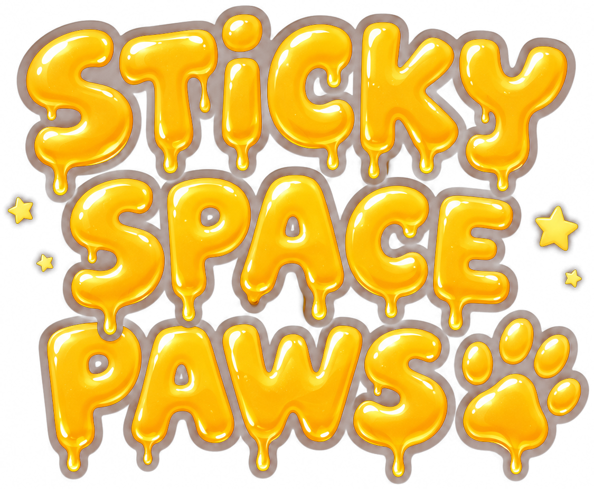

You are a space badger. The bins are full, your paws are sticky, and the neighbours are very light sleepers.
Everything else is inside: the menu opens in the headset, worked with your fingers or a controller.
Hands only. This cannot be played with controllers, and you need both hands and most of your fingers.
Clear some space round you, take breaks, and stop if you feel unwell.
This browser cannot open a headset. On a Meta Quest, open this page in the headset's own browser and press PLAY.
These are also in the headset's own menu.
Re-centre at any time: hold your right index finger and thumb together, or pick up a controller and hold the Meta button.
Sticky Space Paws. A hand-tracked game for Meta Quest, built in a day and polished for a few more.
The code, the objects and the paws are the author's own. The music was composed by the author with Suno. The painted places and skies were made by the author with OpenAI image generation. Sound effects from Kenney and OpenGameArt contributors (CC0). 3D engine: three.js (MIT). Font: Ubuntu (Ubuntu Font Licence).
Licences · Privacy: this game collects nothing and sends nothing.